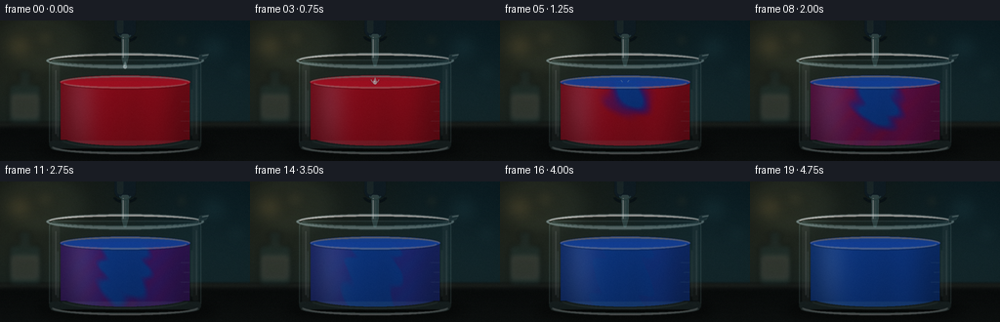
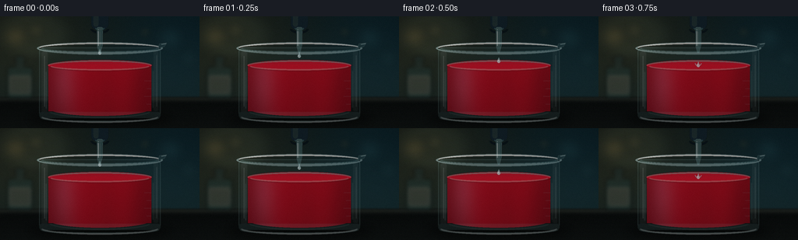
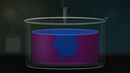

CODING AGENTS AS PIXEL WORLD MODELS
traex/DeepSeek-V4.1-Flash · material_0031
点击播放 · 原生 RGB 像素
逐轮保存的候选
回放视频、检查图与代码变化。
每份候选均可单独播放。实际图片检查记录在下方工具轨迹中。
候选 01播放与检查图
点击播放 · 原生 RGB 像素

展开代码变化
--- 上一保存版本
+++ 本次保存版本
@@ -0,0 +1,388 @@
+from pathlib import Path
+
+import numpy as np
+from PIL import Image, ImageDraw, ImageFilter, ImageFont
+
+import artifact_io
+
+
+W, H, FPS, N = 256, 144, 4.0, 20
+S = 3
+WW, HH = W * S, H * S
+CASE_DIR = Path(__file__).resolve().parent
+
+
+def smoothstep(a, b, x):
+ t = np.clip((x - a) / (b - a), 0.0, 1.0)
+ return t * t * (3.0 - 2.0 * t)
+
+
+def mix(a, b, t):
+ return a * (1.0 - t) + b * t
+
+
+def rgba(color, alpha=255):
+ return (int(color[0]), int(color[1]), int(color[2]), int(alpha))
+
+
+def blurred_ellipse(layer, box, color, blur):
+ tmp = Image.new("RGBA", layer.size, (0, 0, 0, 0))
+ ImageDraw.Draw(tmp).ellipse(box, fill=color)
+ tmp = tmp.filter(ImageFilter.GaussianBlur(blur))
+ layer.alpha_composite(tmp)
+
+
+def make_background():
+ yy, xx = np.mgrid[0:HH, 0:WW].astype(np.float32)
+ xn = xx / S
+ yn = yy / S
+
+ top = np.array([0.035, 0.085, 0.095], dtype=np.float32)
+ bottom = np.array([0.075, 0.135, 0.135], dtype=np.float32)
+ wall_t = smoothstep(0, 108, yn)[..., None]
+ rgb = mix(top[None, None, :], bottom[None, None, :], wall_t)
+
+ warm = np.exp(-((xn - 28) ** 2 / (2 * 82**2) + (yn - 28) ** 2 / (2 * 62**2)))
+ cool = np.exp(-((xn - 226) ** 2 / (2 * 70**2) + (yn - 52) ** 2 / (2 * 76**2)))
+ rgb += warm[..., None] * np.array([0.105, 0.075, 0.025])
+ rgb += cool[..., None] * np.array([0.018, 0.065, 0.085])
+
+ table_y = 103.0
+ table_t = smoothstep(table_y - 1.5, table_y + 2.5, yn)[..., None]
+ table = np.zeros_like(rgb)
+ depth = np.clip((yn - table_y) / (H - table_y), 0, 1)
+ table[:] = np.array([0.035, 0.047, 0.046])
+ table += depth[..., None] * np.array([0.025, 0.030, 0.027])
+ table += np.exp(-((yn - 106) / 3.5) ** 2)[..., None] * np.array([0.08, 0.09, 0.075])
+ rgb = mix(rgb, table, table_t)
+
+ base = Image.fromarray((np.clip(rgb, 0, 1) * 255).astype(np.uint8), "RGB").convert("RGBA")
+
+ bokeh = Image.new("RGBA", (WW, HH), (0, 0, 0, 0))
+ for cx, cy, rx, ry, col, alpha, blur in [
+ (20, 26, 15, 13, (210, 165, 83), 42, 8 * S),
+ (46, 18, 9, 8, (223, 190, 110), 32, 6 * S),
+ (218, 28, 17, 15, (85, 173, 181), 35, 9 * S),
+ (242, 54, 9, 10, (118, 201, 194), 26, 7 * S),
+ (186, 20, 6, 6, (205, 174, 93), 28, 4 * S),
+ (81, 92, 3, 3, (195, 196, 142), 20, 2 * S),
+ (173, 93, 2, 2, (161, 214, 206), 18, 2 * S),
+ ]:
+ blurred_ellipse(
+ bokeh,
+ ((cx - rx) * S, (cy - ry) * S, (cx + rx) * S, (cy + ry) * S),
+ rgba(col, alpha),
+ blur,
+ )
+ base.alpha_composite(bokeh)
+
+ # A shallow, out-of-focus glass bottle on the left reinforces the lab setting.
+ bottle = Image.new("RGBA", (WW, HH), (0, 0, 0, 0))
+ bd = ImageDraw.Draw(bottle)
+ bd.rounded_rectangle((9 * S, 65 * S, 42 * S, 106 * S), radius=4 * S, fill=(43, 76, 73, 92))
+ bd.rectangle((20 * S, 55 * S, 31 * S, 69 * S), fill=(45, 70, 69, 80))
+ bd.ellipse((18 * S, 51 * S, 33 * S, 59 * S), fill=(36, 61, 61, 88))
+ bd.rounded_rectangle((12 * S, 77 * S, 39 * S, 99 * S), radius=1 * S, fill=(211, 210, 187, 38))
+ bd.line((13 * S, 80 * S, 38 * S, 80 * S), fill=(226, 232, 211, 40), width=S)
+ bottle = bottle.filter(ImageFilter.GaussianBlur(2.4 * S))
+ base.alpha_composite(bottle)
+
+ shadow = Image.new("RGBA", (WW, HH), (0, 0, 0, 0))
+ blurred_ellipse(shadow, (35 * S, 122 * S, 221 * S, 141 * S), (0, 0, 0, 125), 6 * S)
+ base.alpha_composite(shadow)
+ return base
+
+
+def make_mask(draw_fn):
+ mask = Image.new("L", (WW, HH), 0)
+ draw_fn(ImageDraw.Draw(mask))
+ return np.asarray(mask, dtype=np.float32) / 255.0
+
+
+def liquid_concentration(t):
+ yy, xx = np.mgrid[0:HH, 0:WW].astype(np.float32)
+ x = xx / S
+ y = yy / S
+ surface = 63.0
+ u = max(0.0, t - 3.0)
+ age = np.clip((t - 3.0) / 16.0, 0.0, 1.0)
+
+ # Bulk conversion is deliberately slow; the descending plume leads it.
+ bulk = 0.92 * smoothstep(0.04, 1.0, age) ** 0.72
+ plume_width = 5.5 + 1.65 * u
+ source = np.exp(
+ -((x - 128.0) ** 2 / (2 * plume_width**2))
+ -((y - (surface + 1.0)) ** 2 / (2 * (7.0 + 2.5 * u) ** 2))
+ )
+
+ front_y = surface + 9.0 + 3.9 * u
+ front_x = 128.0 + 8.0 * np.sin(0.34 * u + 0.5)
+ front = np.exp(
+ -((x - front_x) ** 2 / (2 * (8.5 + 1.45 * u) ** 2))
+ -((y - front_y) ** 2 / (2 * (6.5 + 1.8 * u) ** 2))
+ )
+
+ left_y = surface + 13.0 + 2.8 * u
+ right_y = surface + 17.0 + 2.5 * u
+ left_curl = np.exp(
+ -((x - (116.0 - 7.0 * np.sin(0.38 * u))) ** 2 / (2 * (5.5 + 1.2 * u) ** 2))
+ -((y - left_y) ** 2 / (2 * (5.0 + 1.6 * u) ** 2))
+ )
+ right_curl = np.exp(
+ -((x - (140.0 + 6.0 * np.cos(0.31 * u))) ** 2 / (2 * (5.5 + 1.3 * u) ** 2))
+ -((y - right_y) ** 2 / (2 * (5.5 + 1.7 * u) ** 2))
+ )
+
+ swirl = (
+ 0.5
+ + 0.5
+ * np.sin(
+ 0.18 * x
+ - 0.23 * y
+ + 1.5 * np.sin(0.075 * y + 0.4 * u)
+ + 0.35 * u
+ )
+ )
+ filament = (source + 0.75 * front + 0.55 * left_curl + 0.55 * right_curl) * swirl
+ local = smoothstep(0.0, 2.0, u) * np.clip(0.92 * source + 0.78 * front + 0.38 * filament, 0, 1)
+ c = np.maximum(bulk, local)
+
+ # A few slowly wandering tendrils keep the mixing legible late in the clip.
+ tendril = np.sin(0.24 * x + 0.21 * y - 0.5 * u + 0.9 * np.sin(0.07 * y))
+ tendril *= np.exp(-((x - 128.0) ** 2 / (2 * 30**2))) * smoothstep(2.0, 8.0, u) * (1.0 - age) * 0.08
+ c = np.clip(c + tendril, 0.0, 1.0)
+ return c, u
+
+
+def liquid_rgb(t):
+ yy, xx = np.mgrid[0:HH, 0:WW].astype(np.float32)
+ x = xx / S
+ y = yy / S
+ c, _ = liquid_concentration(t)
+
+ red = np.array([0.69, 0.035, 0.105], dtype=np.float32)
+ magenta = np.array([0.49, 0.045, 0.31], dtype=np.float32)
+ purple = np.array([0.245, 0.105, 0.50], dtype=np.float32)
+ blue = np.array([0.045, 0.255, 0.64], dtype=np.float32)
+
+ low = smoothstep(0.02, 0.48, c)[..., None]
+ high = smoothstep(0.50, 0.95, c)[..., None]
+ color = mix(red[None, None, :], magenta[None, None, :], np.clip(low * 1.65, 0, 1))
+ color = mix(color, purple[None, None, :], smoothstep(0.22, 0.62, c)[..., None])
+ color = mix(color, blue[None, None, :], high)
+
+ depth = np.clip((y - 62.0) / 66.0, 0, 1)
+ radial = 1.0 - np.abs(x - 128.0) / 73.0
+ shade = 0.61 + 0.22 * radial + 0.16 * (1.0 - depth)
+ shade -= 0.045 * np.sin((x - 60.0) * 0.11)
+ color *= shade[..., None]
+
+ # Soft interior light and a little light scattered through the liquid.
+ beam = np.exp(-((x - 82.0) ** 2 / (2 * 12**2))) * np.exp(-((y - 82.0) ** 2 / (2 * 37**2)))
+ color += beam[..., None] * np.array([0.10, 0.12, 0.14])
+ edge_dark = smoothstep(70.0, 90.0, np.abs(x - 128.0))[..., None]
+ color *= 1.0 - 0.14 * edge_dark
+ return np.clip(color, 0, 1)
+
+
+def composite_rgba(base, layer):
+ out = base.copy()
+ out.alpha_composite(layer)
+ return out
+
+
+def draw_liquid(base, t):
+ color = (liquid_rgb(t) * 255).astype(np.uint8)
+ liquid = Image.fromarray(color, "RGB").convert("RGBA")
+
+ mask = make_mask(
+ lambda d: (
+ d.rectangle((62 * S, 62 * S, 194 * S, 122 * S), fill=255),
+ d.ellipse((62 * S, 108 * S, 194 * S, 128 * S), fill=255),
+ )
+ )
+ a = (mask * 255).astype(np.uint8)
+ liquid.putalpha(Image.fromarray(a, "L"))
+ base.alpha_composite(liquid)
+
+ # Surface plane and meniscus.
+ c_surface, _ = liquid_concentration(t)
+ yc = int(63 * S)
+ sample = liquid_rgb(t)[yc, 128 * S]
+ surface_col = np.clip(sample * 1.17 + np.array([0.035, 0.02, 0.03]), 0, 1)
+ surf = Image.new("RGBA", (WW, HH), (0, 0, 0, 0))
+ sd = ImageDraw.Draw(surf)
+ sd.ellipse((61 * S, 56 * S, 195 * S, 70 * S), fill=rgba(surface_col * 255, 238))
+ sd.arc((62 * S, 57 * S, 194 * S, 69 * S), 180, 360, fill=(255, 219, 214, 100), width=1 * S)
+ sd.arc((65 * S, 59 * S, 191 * S, 69 * S), 5, 175, fill=(255, 245, 226, 62), width=1 * S)
+ surf = surf.filter(ImageFilter.GaussianBlur(0.45 * S))
+ base.alpha_composite(surf)
+
+ # Ripple rings mark the droplet impact and then settle.
+ ripple = Image.new("RGBA", (WW, HH), (0, 0, 0, 0))
+ rd = ImageDraw.Draw(ripple)
+ if 3 <= t <= 12:
+ elapsed = t - 3
+ for k in range(3):
+ age = elapsed - 1.15 * k
+ if 0 <= age <= 8:
+ rx = (5 + 4.4 * age) * S
+ ry = (1.3 + 1.15 * age) * S
+ alpha = int(95 * np.exp(-age / 3.8))
+ box = (128 * S - rx, 63 * S - ry, 128 * S + rx, 63 * S + ry)
+ rd.arc(box, 8, 172, fill=(225, 240, 255, alpha), width=max(1, int(0.65 * S)))
+ ripple = ripple.filter(ImageFilter.GaussianBlur(0.35 * S))
+ base.alpha_composite(ripple)
+
+ # Thin front-wall reflection over the liquid.
+ front = Image.new("RGBA", (WW, HH), (0, 0, 0, 0))
+ fd = ImageDraw.Draw(front)
+ fd.line((59 * S, 71 * S, 59 * S, 119 * S), fill=(195, 240, 238, 34), width=2 * S)
+ fd.line((196 * S, 70 * S, 196 * S, 118 * S), fill=(208, 247, 241, 28), width=2 * S)
+ fd.arc((61 * S, 111 * S, 195 * S, 131 * S), 15, 165, fill=(218, 252, 244, 36), width=2 * S)
+ front = front.filter(ImageFilter.GaussianBlur(0.7 * S))
+ base.alpha_composite(front)
+ return base
+
+
+def draw_glass(base):
+ glass = Image.new("RGBA", (WW, HH), (0, 0, 0, 0))
+ gd = ImageDraw.Draw(glass)
+
+ # Back wall of the beaker.
+ gd.rounded_rectangle(
+ (50 * S, 40 * S, 206 * S, 130 * S),
+ radius=6 * S,
+ fill=(116, 192, 191, 9),
+ outline=(192, 238, 235, 55),
+ width=1 * S,
+ )
+ gd.arc((51 * S, 123 * S, 205 * S, 137 * S), 8, 172, fill=(179, 231, 227, 74), width=3 * S)
+
+ # Soft body glints.
+ gd.rounded_rectangle((53 * S, 45 * S, 61 * S, 124 * S), radius=3 * S, fill=(211, 250, 247, 20))
+ gd.rounded_rectangle((197 * S, 44 * S, 203 * S, 122 * S), radius=2 * S, fill=(204, 248, 243, 17))
+ gd.line((57 * S, 51 * S, 57 * S, 116 * S), fill=(245, 255, 251, 62), width=1 * S)
+ gd.line((201 * S, 50 * S, 201 * S, 116 * S), fill=(235, 253, 249, 46), width=1 * S)
+
+ # Graduation ticks on the right wall.
+ for y in (83, 93, 103, 113):
+ length = 9 if y in (83, 103) else 6
+ gd.line(
+ ((194 - length) * S, y * S, 194 * S, y * S),
+ fill=(229, 252, 248, 72),
+ width=max(1, int(0.55 * S)),
+ )
+
+ # Thick base, with a bright lower edge.
+ gd.rounded_rectangle((50 * S, 123 * S, 206 * S, 131 * S), radius=4 * S, fill=(142, 214, 210, 32))
+ gd.arc((51 * S, 119 * S, 205 * S, 137 * S), 14, 166, fill=(238, 255, 249, 92), width=2 * S)
+
+ # Rim ellipse and a small pouring lip.
+ gd.ellipse((47 * S, 33 * S, 209 * S, 49 * S), outline=(204, 242, 239, 112), width=3 * S)
+ gd.arc((50 * S, 34 * S, 206 * S, 47 * S), 182, 358, fill=(255, 255, 246, 192), width=2 * S)
+ gd.arc((54 * S, 36 * S, 202 * S, 46 * S), 2, 178, fill=(177, 230, 228, 92), width=1 * S)
+ gd.polygon(
+ [
+ (204 * S, 35 * S),
+ (214 * S, 34 * S),
+ (211 * S, 39 * S),
+ (203 * S, 41 * S),
+ ],
+ fill=(166, 226, 222, 22),
+ outline=(220, 250, 246, 110),
+ )
+ gd.line((207 * S, 36 * S, 213 * S, 35 * S), fill=(250, 255, 247, 150), width=1 * S)
+
+ glass = glass.filter(ImageFilter.GaussianBlur(0.35 * S))
+ base.alpha_composite(glass)
+ return base
+
+
+def draw_pipette_and_drop(base, t):
+ layer = Image.new("RGBA", (WW, HH), (0, 0, 0, 0))
+ d = ImageDraw.Draw(layer)
+
+ # Rubber bulb, just entering the top of frame.
+ d.rounded_rectangle((117 * S, -6 * S, 139 * S, 17 * S), radius=7 * S, fill=(19, 35, 44, 238))
+ d.rounded_rectangle((120 * S, -4 * S, 126 * S, 13 * S), radius=3 * S, fill=(53, 78, 84, 80))
+ d.arc((116 * S, 10 * S, 140 * S, 22 * S), 2, 178, fill=(8, 19, 25, 210), width=3 * S)
+
+ # Clear glass stem and tapered tip.
+ d.rounded_rectangle((124.2 * S, 14 * S, 131.8 * S, 39 * S), radius=1.8 * S, fill=(165, 226, 225, 63))
+ d.polygon(
+ [(124.6 * S, 38 * S), (131.4 * S, 38 * S), (129.2 * S, 47 * S), (126.8 * S, 47 * S)],
+ fill=(155, 220, 221, 57),
+ outline=(222, 248, 244, 95),
+ )
+ d.line((126.2 * S, 17 * S, 126.2 * S, 38 * S), fill=(247, 255, 250, 150), width=1 * S)
+ d.line((130.1 * S, 19 * S, 130.1 * S, 39 * S), fill=(100, 178, 185, 60), width=1 * S)
+ d.arc((122 * S, 8 * S, 134 * S, 19 * S), 15, 165, fill=(97, 165, 168, 70), width=1 * S)
+
+ if t <= 3:
+ drop_y = [47.0, 51.0, 57.5, 63.0][t]
+ if t > 0:
+ trail_top = [0, 47.5, 52.0, 59.0][t]
+ d.line(
+ (128 * S, trail_top * S, 128 * S, (drop_y - 3) * S),
+ fill=(199, 239, 237, 45),
+ width=max(1, int(0.55 * S)),
+ )
+ r = 2.25 * S
+ cy = drop_y * S
+ d.ellipse((128 * S - r, cy - 0.8 * r, 128 * S + r, cy + 1.15 * r), fill=(201, 241, 239, 168))
+ d.polygon(
+ [(128 * S, (drop_y - 5.1) * S), (128 * S - 1.45 * S, (drop_y - 1.2) * S), (128 * S + 1.45 * S, (drop_y - 1.2) * S)],
+ fill=(201, 241, 239, 145),
+ )
+ d.ellipse((126.8 * S, cy - 1.2 * S, 127.8 * S, cy + 0.2 * S), fill=(255, 255, 252, 210))
+ d.arc((126 * S, cy - 2.0 * S, 130 * S, cy + 2.6 * S), 25, 155, fill=(242, 255, 252, 180), width=1 * S)
+
+ # A tiny splash crown at contact.
+ if 3 <= t <= 6:
+ strength = [1.0, 0.8, 0.5, 0.25][t - 3]
+ d.line((125.5 * S, 63 * S, 123.8 * S, (60.5 + 1.5 * (1 - strength)) * S),
+ fill=(214, 244, 250, int(150 * strength)), width=1 * S)
+ d.line((130.5 * S, 63 * S, 132.2 * S, (60.5 + 1.5 * (1 - strength)) * S),
+ fill=(214, 244, 250, int(150 * strength)), width=1 * S)
+
+ layer = layer.filter(ImageFilter.GaussianBlur(0.22 * S))
+ base.alpha_composite(layer)
+ return base
+
+
+def add_foreground_finish(base, frame_index):
+ yy, xx = np.mgrid[0:HH, 0:WW].astype(np.float32)
+ xn = xx / W
+ yn = yy / H
+
+ arr = np.asarray(base.convert("RGB"), dtype=np.float32) / 255.0
+ vignette = 1.0 - 0.24 * smoothstep(0.38, 0.78, np.sqrt((xn - 0.5) ** 2 * 1.3 + (yn - 0.47) ** 2))
+ arr *= vignette[..., None]
+
+ # Very slight warm-to-cool grading and fine sensor grain.
+ arr[..., 0] *= 1.025
+ arr[..., 2] *= 1.018
+ rng = np.random.default_rng(90210 + frame_index)
+ grain = rng.normal(0.0, 0.008, (HH, WW, 1)).astype(np.float32)
+ arr = np.clip(arr + grain, 0, 1)
+ out = Image.fromarray((arr * 255).astype(np.uint8), "RGB")
+ return out.resize((W, H), Image.Resampling.LANCZOS)
+
+
+def render():
+ background = make_background()
+ frames = []
+ for t in range(N):
+ frame = background.copy()
+ frame = draw_liquid(frame, t)
+ frame = draw_glass(frame)
+ frame = draw_pipette_and_drop(frame, t)
+ frames.append(np.asarray(add_foreground_finish(frame, t), dtype=np.uint8))
+ return np.stack(frames, axis=0)
+
+
+if __name__ == "__main__":
+ video = render()
+ artifact_io.save(video, CASE_DIR)
+ print(f"saved {video.shape[0]} frames to {CASE_DIR}")
可观测工具轨迹
实际执行的命令与返回图片。
命令 1exit 0
/bin/bash -c "pwd && rg --files -g 'prompt.txt' -g 'GENERATION_RULES.md' -g 'task_spec.json' -g '"'!node_modules'"'"
命令 2exit 0
/bin/bash -c "ls -la && find . -maxdepth 2 -type f | sort | sed -n '1,200p'"
命令 3exit 0
/bin/bash -c 'cat prompt.txt'
命令 4exit 0
/bin/bash -c 'cat GENERATION_RULES.md'
命令 5exit 0
/bin/bash -c 'cat task_spec.json'
命令 6exit 0
/bin/bash -c "sed -n '1,240p' artifact_io.py"
命令 7exit 0
/bin/bash -c "python - <<'PY'
import PIL, numpy
print('Pillow', PIL.__version__, 'numpy', numpy.__version__)
PY"命令 8exit 0
/bin/bash -c 'command -v ffmpeg || true'
命令 9exit 0
/bin/bash -c 'python generate.py'
命令 10exit 0
/bin/bash -c "python - <<'PY'
from PIL import Image
from pathlib import Path
import numpy as np
folder=Path('frames')
files=sorted(folder.glob('*.png'))
arr=np.stack([np.asarray(Image.open(p)) for p in files])
print('frames', arr.shape, 'range', int(arr.min()), int(arr.max()))
for i,p in enumerate(files):
a=np.asarray(Image.open(p))
# center liquid patch, avoiding glass highlights and drop
patch=a[76:102,90:166].astype(float)
print(f'{i:02d} {i/4:.2f}s mean RGB {patch.mean((0,1)).round(1)}')
PY"命令 11exit 0
/bin/bash -c "du -h pixels.npz index.html inspection.png frames/00.png && ls -lh | sed -n '1,80p'"
命令 12exit 0
/bin/bash -c 'git status --short 2>/dev/null || true'
命令 13exit 0
/bin/bash -c "python - <<'PY'
from pathlib import Path
import numpy as np
from PIL import Image
p = np.load('pixels.npz')['pixels']
frames = sorted(Path('frames').glob('*.png'))
assert p.shape == (144, 256, 20), p.shape
assert len(frames) == 20
assert all(Image.open(f).size == (256, 144) for f in frames)
assert Path('index.html').stat().st_size > 1_000_000
print('verified: 20 frames, 256x144, RGB player and pixel tensor present')
PY"视觉工具实际返回图片 1

视觉工具实际返回图片 2

视觉工具实际返回图片 3

保存候选 1 份；完成命令 13 次；可验证图片返回 3 张。原始 API 响应与完整日志保留在本地。